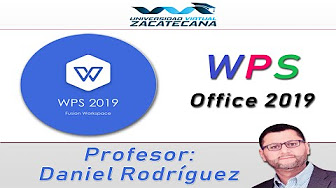

Introducción a WPS Office
menu
Parte 1
Parte 2
Parte 3
Parte 4

Dr. Daniel Rodríguez Ramos
danielr@uaz.edu.mx
check
1.- Descargar e Instalar
check
2.- Cambiar el idioma
check
3.- Crear acceso directo
check
4.- Primeros pasos
check
5.- Revisión ortográfica
check
6.- WPS en Linux
Descargar e Instalar
Aquí te dejamos las indicaciones sobre como descargar e instalar el programa de manera gratuita.
Regresar al Inicio
Cambiar el idioma
Como cambiar el idioma a español de este programa.
Regresar al Inicio
Crear un acceso directo en la barra de tareas
Crear un acceso directo en el escritorio o en la barra de tareas de Windows es importante para acceder rápidamente a este programa.
Regresar al Inicio
Primeros Pasos
Conoce los programas con los que cuenta esta suite
Regresar al Inicio
Revisión ortográfica
Cuando creamos un documento en esta suite, de manera predeterminada, la configuración para revisar la ortografía está en ingles, por lo que debemos cambiarla a español, este videotutorial de tice como hacerlo.
Regresar al Inicio
WPS en linux
Si tu computadora tiene instalado cualquier programa con linux este videotutorial te explica como instalarlo en estos sistemas operativos.
Regresar al Inicio
 Dr. Daniel Rodríguez Ramos
danielr@uaz.edu.mx
Dr. Daniel Rodríguez Ramos
danielr@uaz.edu.mx